Schießscheibe per Foto werten
Scheibe fotografieren: Scoreshot findet Ringe und Treffer auf dem iPhone und wertet jeden Schuss mit Zehntel. Mit einem Tipp korrigieren, Trainingsbuch führen.
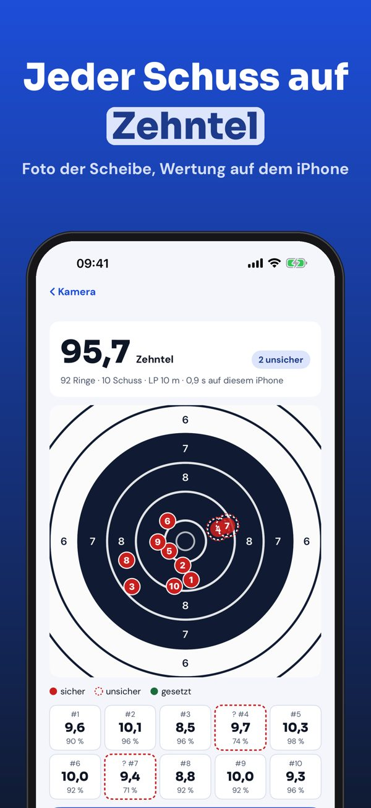
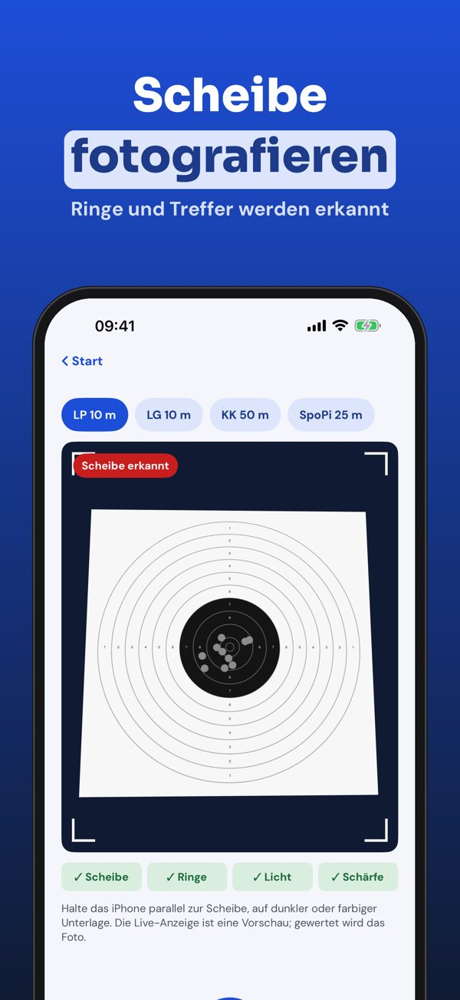
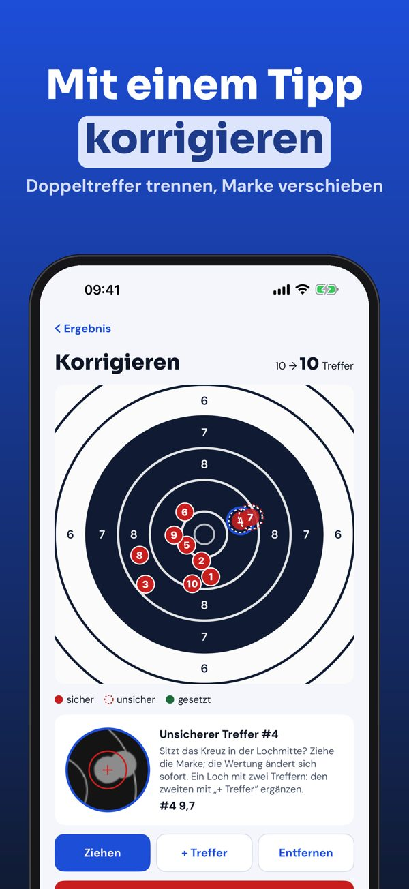
Scoreshot wertet Papierscheiben für Luftpistole und Luftgewehr 10 m anhand eines Fotos aus. Jeder Schuss bekommt eine Zehntelwertung (z. B. 10,9), die Serie zeigt Gruppe und mittlere Trefferlage.
Ohne Kauf: 3 automatische Auswertungen pro Tag, Treffer von Hand setzen ohne Limit und das Trainingsbuch. Scoreshot Plus ist ein Einmalkauf: ohne Limit, Statistik, Bericht als PDF und CSV, alle Scheibentypen und Trainer-Freigabe. Kein Abo.
Scoreshot schlägt eine Wertung anhand des Fotos vor; prüfe sie und korrigiere bei Bedarf. Im Wettkampf gilt die Wertung der Aufsicht. Nicht mit Verbänden oder Herstellern verbunden.
Terms of Use (EULA): https://www.apple.com/legal/internet-services/itunes/dev/stdeula/
Privacy: https://baytechbv.github.io/privacy/scoreshot-eu/
Licz punkty z tarczy zdjęciem
Zrób zdjęcie tarczy, a Scoreshot znajdzie pierścienie i przestrzeliny na iPhonie i policzy każdy strzał z dziesiątymi. Popraw jednym dotknięciem.
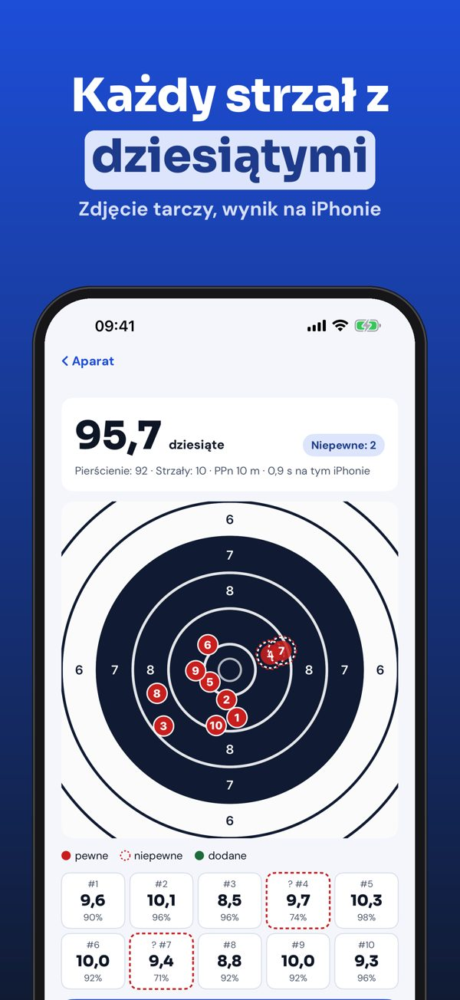
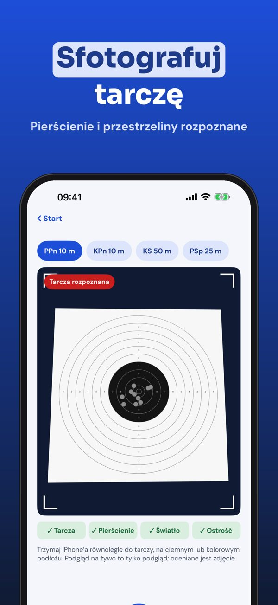
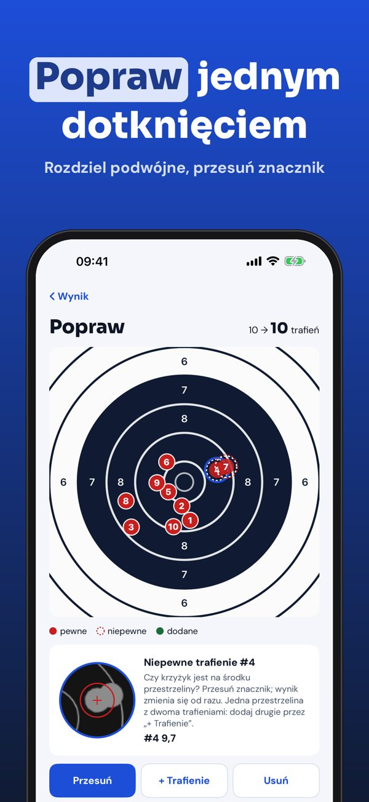
Scoreshot ocenia papierowe tarcze do pistoletu i karabinu pneumatycznego 10 m na podstawie zdjęcia. Każdy strzał ma wynik z dziesiątymi (np. 10,9), a seria pokazuje skupienie i średni punkt trafień.
Bez zakupu: 3 automatyczne oceny dziennie, ręczne zaznaczanie trafień bez limitu i dziennik. Scoreshot Plus to jednorazowy zakup: bez limitu, statystyki, raport PDF i CSV, wszystkie tarcze i udostępnianie trenerowi. Bez subskrypcji.
Scoreshot proponuje wynik na podstawie zdjęcia; sprawdź go i popraw w razie potrzeby. Na zawodach obowiązuje wynik sędziów. Aplikacja nie jest powiązana z żadnym związkiem ani producentem.
Terms of Use (EULA): https://www.apple.com/legal/internet-services/itunes/dev/stdeula/
Privacy: https://baytechbv.github.io/privacy/scoreshot-eu/
Punteggio decimale da una foto
Fotografa il bersaglio: Scoreshot trova anelli e fori sull’iPhone e calcola ogni colpo con i decimi. Correggi con un tocco e tieni il diario di allenamento.
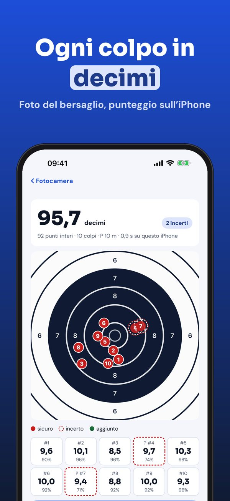
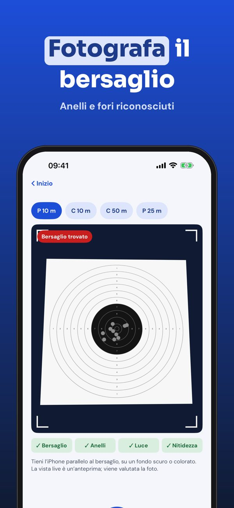
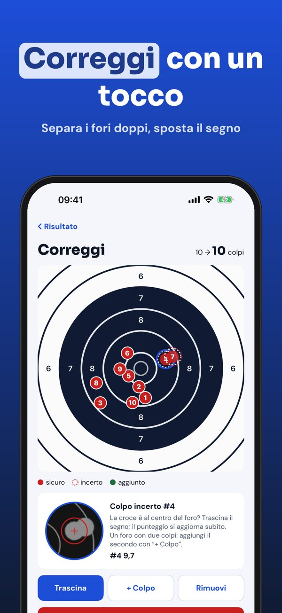
Scoreshot valuta i bersagli di carta di pistola e carabina ad aria compressa 10 m da una foto. Ogni colpo riceve un punteggio decimale (es. 10,9) e la serie mostra rosata e punto medio d’impatto.
Senza acquisto: 3 valutazioni automatiche al giorno, inserimento manuale senza limiti e diario. Scoreshot Plus è un acquisto unico: nessun limite, statistiche, report PDF e CSV, tutti i bersagli e condivisione con l’allenatore. Nessun abbonamento.
Scoreshot propone un punteggio a partire dalla foto; controllalo e correggilo se serve. In gara vale il punteggio della giuria. Non è collegata a federazioni o produttori.
Terms of Use (EULA): https://www.apple.com/legal/internet-services/itunes/dev/stdeula/
Privacy: https://baytechbv.github.io/privacy/scoreshot-eu/
Comptez vos impacts en photo
Photographiez la cible : Scoreshot trouve les cercles et les impacts sur l’iPhone et note chaque tir au dixième. Corrigez d’un geste et tenez votre carnet.
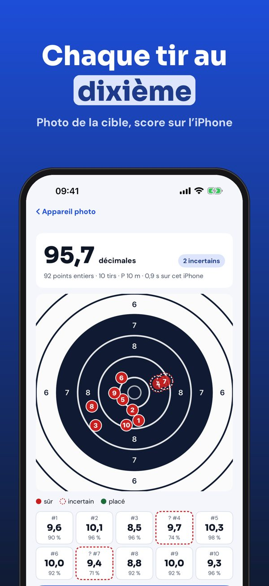
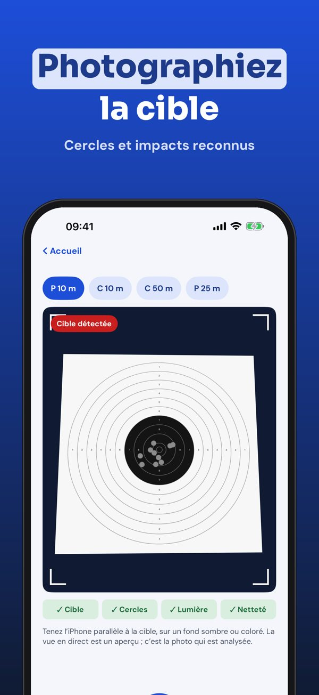
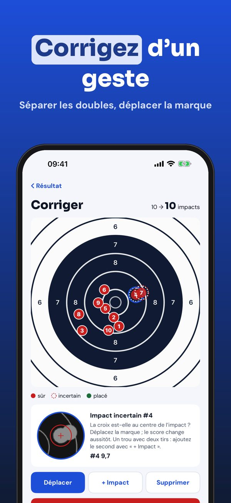
Scoreshot évalue les cibles papier de pistolet et de carabine à air 10 m à partir d’une photo. Chaque tir reçoit un score décimal (ex. 10,9) et la série affiche groupement et point moyen d’impact.
Sans achat : 3 analyses automatiques par jour, saisie manuelle illimitée et carnet. Scoreshot Plus est un achat unique : sans limite, statistiques, rapport PDF et CSV, toutes les cibles et partage avec l’entraîneur. Sans abonnement.
Scoreshot propose un score à partir de la photo ; vérifiez-le et corrigez-le si besoin. En compétition, le score des arbitres fait foi. Sans lien avec une fédération ou un fabricant.
Terms of Use (EULA): https://www.apple.com/legal/internet-services/itunes/dev/stdeula/
Privacy: https://baytechbv.github.io/privacy/scoreshot-eu/
Räkna poäng på tavlan med foto
Fotografera tavlan: Scoreshot hittar ringar och träffar på iPhone och räknar varje skott med tiondelar. Rätta med ett tryck och för din träningsdagbok.
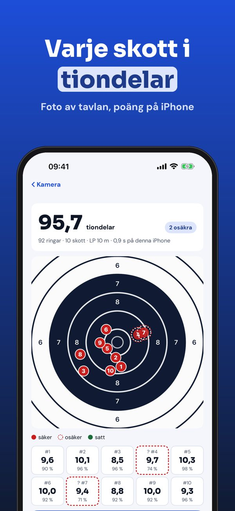
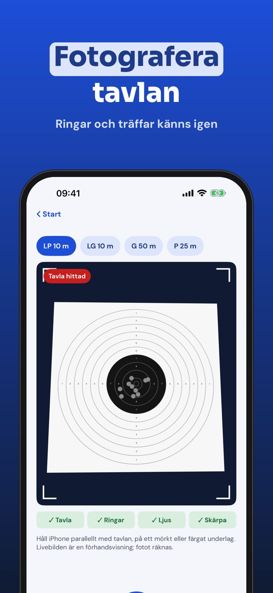
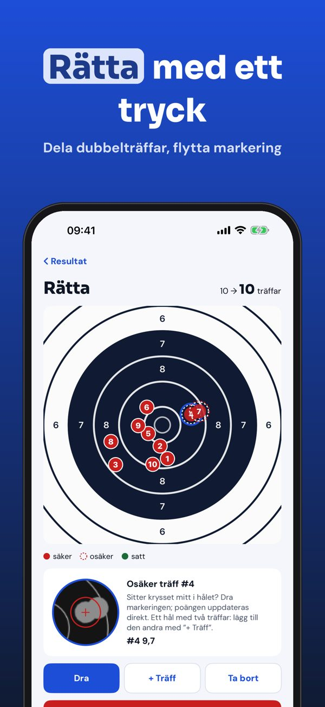
Scoreshot räknar poäng på papperstavlor för luftpistol och luftgevär 10 m från ett foto. Varje skott får decimalpoäng (t.ex. 10,9) och serien visar gruppering och medelträffpunkt.
Utan köp: 3 automatiska analyser per dag, manuell markering utan gräns och dagbok. Scoreshot Plus är ett engångsköp: utan gräns, statistik, rapport som PDF och CSV, alla tavlor och delning med tränaren. Ingen prenumeration.
Scoreshot föreslår poäng utifrån fotot; kontrollera och rätta vid behov. På tävling gäller domarnas poäng. Inte kopplad till något förbund eller någon tillverkare.
Terms of Use (EULA): https://www.apple.com/legal/internet-services/itunes/dev/stdeula/
Privacy: https://baytechbv.github.io/privacy/scoreshot-eu/